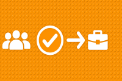

Kapitel 1: Themenwahl und Organisation der Gruppenarbeit

In diesem Kapitel finden Sie ...
- ... die Themenwahl für die Gruppenarbeit.
- ... Informationen zur Einrichtung der Gruppen.
- ... erste Informationen zum ausgewählten Unternehmen und seiner Branche.
Handlungssituation
Die ChangeIT GmbH möchte das Angebot für seine Kunden zukünftig umfassender gestalten und hat eine kleine Unternehmensberatung übernommen und als Abteilung integriert. Die Schnittstelle zwischen dem bisherigen IT-Systemhaus und der neuen Unternehmensberatungsschiene nehmen Sie ein.

Um die neue Abteilung auch den Bestandskunden des IT-Systemhauses bekannt zu machen, bemühen Sie sich um ein großes Referenzprojekt. Da kommt es Ihnen gelegen, dass im Rahmen der Wirtschaftsförderung von kleinen und mittelständischen Unternehmen (KMU) ein Wettbewerb des Technologie und Gründerzentrums ausgerufen wurde. An dem Wettbewerb beteiligen sich große Unternehmen, die auf neue Ansätze für Ihre Handlungen auf dem Markt bauen wollen.
Der Wettbewerb umfasst insbesondere die Weiterentwicklung der digitalen Produkte und Geschäftsmodelle der Konzerne. Bei entsprechender Qualität der Ergebnisse erhofft sich die ChangeIT auch über den Wettbewerb hinaus Aufträge aus dem Umfeld der großen Unternehmen.
Folgende große Unternehmen sind an dem Wettbewerb beteiligt. Verschaffen Sie sich einen Überblick über die Unternehmen bzw. Branchen und treffen Sie die Entscheidung, für welches Unternehmen Sie tätig werden möchten.
| Logo | Unternehmensname | Beschreibung | Link |
|---|---|---|---|
| LEGO | Lego entwickelt, produziert und vertreibt kreative Bausysteme aus Kunststoffbausteinen, mit denen Kinder und Erwachsene spielerisch bauen und lernen können. | zu den Podcastfolgen | |
| tinder | Tinder ist eine Online-Dating-Plattform, die Menschen mithilfe von Standort- und Profilinformationen durch einfaches Wischen miteinander verbindet. | zu den Podcastfolgen | |
| McFit | McFIT ist eine Fitnessstudiokette, die Training rund um die Uhr in über 230 Studios in Deutschland, Österreich und Italien anbietet und damit eine der größten Fitness-Communities Europas bildet. | zu den Podcastfolgen | |
| Flixbux | FlixBus ist ein globales Mobilitätsunternehmen mit Sitz in München, das unter den Marken FlixBus, FlixTrain, Greyhound und Kâmil Koç Fernbus- und Zugreisen in über 40 Ländern auf vier Kontinenten anbietet. | zu den Podcastfolgen | |
| Spotify | Spotify ist ein Musik-Streaming-Dienst, der Nutzern weltweit Zugriff auf Millionen von Songs, Podcasts und Hörbüchern bietet. | zu den Podcastfolgen | |
| IKEA | IKEA ist ein schwedisches Möbelunternehmen, das weltweit erschwingliche, funktionale und gut gestaltete Einrichtungsgegenstände sowie Wohnaccessoires anbietet, die oft als Bausätze zur Selbstmontage verkauft werden. | zu den Podcastfolgen | |
 |
DM & Rossmann | dm und Rossmann sind große Drogerieketten in Deutschland, die ein breites Sortiment an Produkten für Körperpflege, Gesundheit, Haushalt und Ernährung anbieten. | zu den Podcastfolgen |
 |
Adidas & Puma | Adidas und Puma sind zwei weltweit führende deutsche Sportartikelhersteller mit Sitz in Herzogenaurach, die aus dem Bruderzwist der Dassler-Brüder hervorgingen und seitdem in intensiver Konkurrenz stehen. | zu den Podcastfolgen |
Gruppen- und Themenwahl
Die Gruppen- und Themenwahl erfolgt über eine Moodle-Aktivität.
Kompetenz 1.0: Gruppenarbeit organisieren
Der erste Schritt ist die Auswahl der Gruppe bzw. des Unternehmens/der Branche für die Analysen und Empfehlungen zur allgemeinen digitalen Ausrichtung und digitalen Geschäftsmodellen. Anschließend soll innerhalb der Gruppe ein gemeinsames Vorgehen besprochen und die digitale Arbeitsumgebung eingerichtet werden.
A|1.0: Einrichtung der Gruppenarbeit
Sie werden in diesem Kapitel ein Unternehmen und seine Branche genauer betrachten, um eine Strategie für die Digitalisierung des Unternehmens sowie ggf. passender digitaler Geschäftsmodelle zu entwicklen. Hierfür richten Sie sich in Ihrer Gruppe entsprechend ein. Die Ergebnisse der Teilaufgaben führen zu einer Gesamtpräsentation. Diese umfasst 15 Minuten und stellt Ihre Arbeitsergebnisse aus diesem Kapitel dar.
Richten Sie sich also durch Nutzung entsprechender Arbeitsumgebungen als Gruppe ein.
Kompetenz 1.1: Zeit- und Aufgabenplanung durchführen
Sie wissen nun, welche Aufgaben im Rahmen des Wettbewerbs auf Sie zukommen. Die einzelnen Phasen der Veranstaltung sind in einem Gantt-Diagramm festgehalten. Um alle Aufgaben termingerecht durchführen zu können, nehmen Sie eine gruppenspeziefische Zeit- und Aufgabenplanung vor.
A|1.1: Zeit und Aufgaben planen
Sie werden in diesem Kapitel ein Unternehmen und seine Branche genauer betrachten, um eine Strategie für die Digitalisierung des Unternehmens sowie ggf. passender digitaler Geschäftsmodelle zu entwicklen. Hierfür richten Sie sich in Ihrer Gruppe entsprechend ein. Die Ergebnisse der Teilaufgaben führen zu einer Gesamtpräsentation. Diese umfasst 15 Minuten und stellt Ihre Arbeitsergebnisse aus diesem Kapitel dar.
Richten Sie sich also durch Nutzung entsprechender Arbeitsumgebungen als Gruppe ein. Für Ihre Zeitplanungen finden Sie ein Diagramm im Kurs (M|1.1.0: Überblick zum Schuljahr).
M|1.1.0: Überblick zum Schuljahr
Kompetenz 1.2: Unternehmens- und Brancheninformationen einholen
Zur Erstinformation über das ausgewählte Unternehmen und seine Branche nutzen Sie die verlinkten Podcastfolgen in diesem Abschnitt. Die Informationen können anschließend durch Internetrecherche angereichert werden, sodass ein für die weiteren Tätigkeiten vollständiges Bild entsteht.
A|1.2: Erstrecherche über die Podcastfolgen durchführen
Zur Erstrecherche stehen Ihnen die Podcastfolgen der Reihe "Kampf der Unternehmen" zur Verfügung (Verlinkung aus der Unternehmensübersicht in diesem Kapitel).
Aufgabe 1
Hören Sie sich die Folgen zu Ihrem gewählten Unternehmen an und machen Sie sich ggf. Notizen. Tauschen Sie sich innerhalb Ihrer Gruppe aus. Sie können die Aufgabe 2 direkt arbeitsteilig mit planen.
Aufgabe 2
Füllen Sie als Gruppe den Unternehmenssteckbrief aus und geben Sie diesen in dieser Aufgabe ab.
Tipp:
Sie können für spätere Recherechen aus den Podcastfolgen Transkripte generieren. Hierfür gibt es lokale und damit auch für andere Fälle datenschutzkonforme KI-Anwendungen wie bspw. Vibe..
Handlungsergebnis
Nach Abschluss dieses Kapitels sind Sie für die eigentliche inhaltliche Arbeit startklar. Ihre Gruppe hat sich gebildet, Sie haben die Arbeitsmittel und -orte abgestimmt sowie die Erstrecherche zum von Ihnen ausgewählten Unternehmen begonnen.
Lizenz

Der KDM LF12 Kurs von André Neumann ist lizenziert unter einer Creative Commons Namensnennung - Nicht-kommerziell - Weitergabe unter gleichen Bedingungen 4.0 International Lizenz. Fragen, Hinweise etc. an neumann@mmbbs.de.